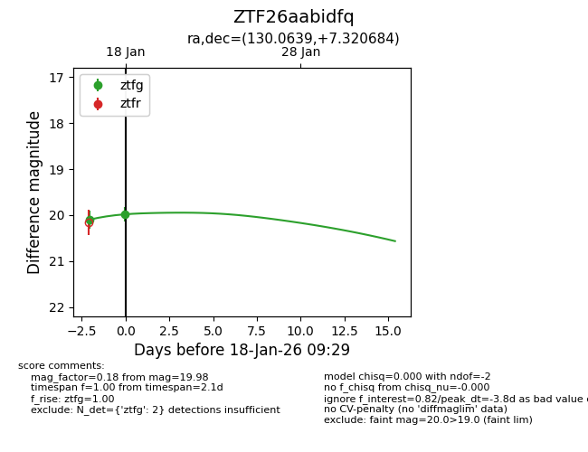
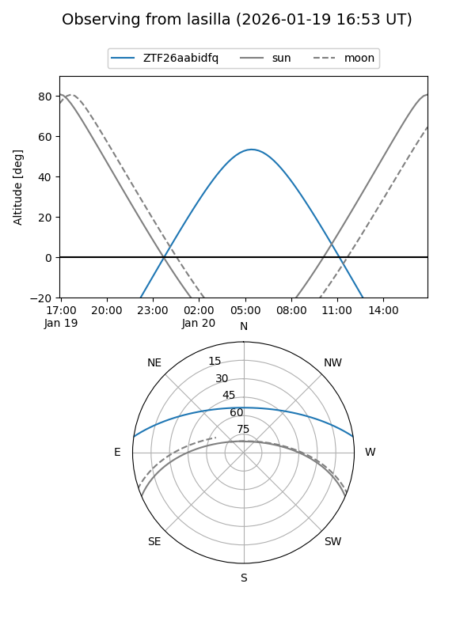
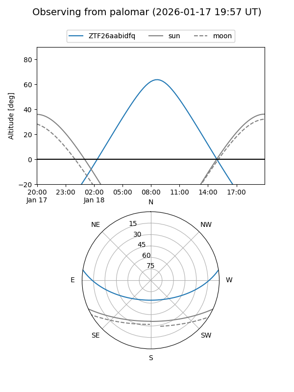
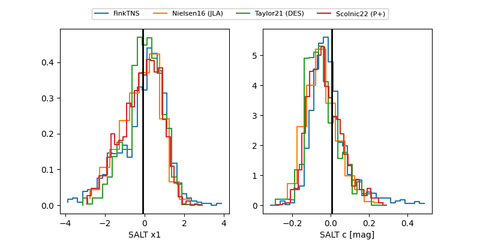

ZTF26aabidfq
Target ZTF26aabidfq at 2026-01-18 08:55
Aliases and brokers:
FINK: link
Lasair: link
ALeRCE: link
alt names
ZTF26aabidfq (ztf,fink_ztf)
Coordinates:
equatorial (ra, dec) = 130.0639,+7.32068
equatorial (HMS+DMS) = 08:40:15.33,+07:19:14.46
galactic (l, b) = (218.9731,+27.49416)
Flags:
Photometry:
last ztfg=20.10
1 ztfg detections
Lightcurve

Visibility


Additional plots
